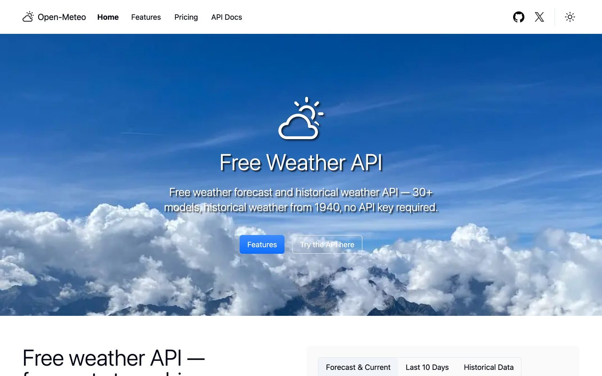
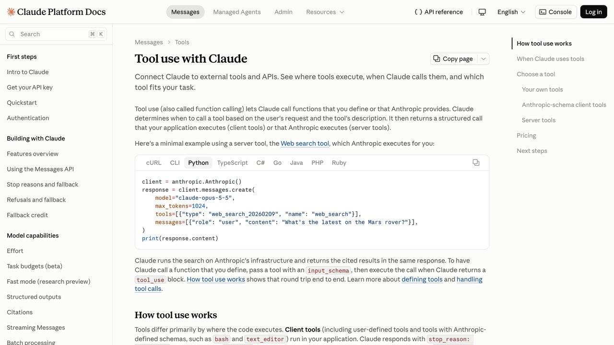

Cómo darle a un agente de IA acceso a datos reales y gratis
Un chatbot normal no sabe qué tiempo hace ahora mismo en tu ciudad. Esta guía te enseña, con una demo que puedes probar en esta misma página y código real debajo, exactamente cómo se le da a un modelo acceso a un dato que cambia cada minuto.
Pregúntale a cualquier chatbot qué tiempo hace ahora mismo en tu calle y pasará una de dos cosas: te dirá honestamente que no tiene acceso a datos en tiempo real, o —peor— se inventará una respuesta con total seguridad. Ninguna de las dos es lo que quieres cuando estás construyendo algo de verdad. La solución no es un modelo "más inteligente": es darle acceso a una fuente de datos real, con reglas claras sobre cuándo y cómo puede usarla.
Esto es lo que separa un chatbot de un agente de verdad, y es exactamente el mecanismo detrás de MCP, de los plugins de ChatGPT y de cualquier "agente" comercial que consulta precios, el clima o tu calendario. Se llama tool use (uso de herramientas) o function calling (llamada a funciones), y en el fondo es más simple de lo que suena.
Esta guía usa un ejemplo concreto y gratuito de principio a fin: una API pública del tiempo (Open-Meteo) que no exige clave ni registro para uso no comercial. Al final de la sección 2 tienes una demo real e interactiva, funcionando en esta misma página, seguida del código exacto que la conecta a un modelo de IA. Cópialo, cámbialo de API y tendrás tu primer agente con datos reales en un rato.

Por qué un modelo no puede simplemente "saberlo"
Un modelo de lenguaje se entrena una vez, sobre un corpus de texto con una fecha de corte, y luego queda congelado: no aprende nada nuevo entre esa fecha y el momento en que tú le escribes. Eso significa que no puede saber el precio del bitcoin ahora mismo, ni si va a llover esta tarde en tu ciudad, ni el resultado de un partido que se jugó ayer, por la razón simple de que esa información no existía todavía cuando se generaron sus parámetros.
Lo inquietante no es esa limitación en sí —es lógica y esperable—, sino que un modelo mal instruido puede rellenar ese hueco con una respuesta que suena perfectamente segura de sí misma, sin ninguna señal visible de que se lo ha inventado. Nuestra guía sobre alucinaciones de la IA cubre ese problema en detalle; esta guía cubre la solución técnica: dejar de pedirle al modelo que "sepa" cosas y, en su lugar, darle una forma de consultarlas en el momento.
La diferencia en una frase:
Un chatbot responde con lo que memorizó. Un agente con herramientas responde con lo que acaba de comprobar.
Hay un matiz que conviene aclarar porque genera confusión: algunos modelos comerciales sí tienen acceso a una herramienta de búsqueda web integrada de fábrica, y eso les permite responder preguntas sobre hechos recientes sin que tú programes nada. Pero esa búsqueda integrada es exactamente el mismo mecanismo que esta guía te enseña a montar por tu cuenta — una herramienta más, con su propio nombre y su propia función detrás —, solo que ya viene configurada por el proveedor. En el momento en que necesitas un dato de tu sistema (tu inventario, tu base de clientes, tu API interna), esa búsqueda web genérica ya no sirve, y ahí es donde entra construir tu propia herramienta.
Cómo funciona el mecanismo, paso a paso
El proceso tiene siempre la misma forma, sea Claude, ChatGPT o Gemini el modelo que uses: tú le describes una "herramienta" disponible (un nombre, qué hace, qué datos necesita para funcionar) en la misma llamada donde envías tu pregunta. El modelo no ejecuta nada por sí mismo — decide si necesita esa herramienta y, si es así, te devuelve una petición estructurada pidiéndote que la ejecutes tú. Tu código la ejecuta de verdad, y le devuelve el resultado real en un segundo mensaje. Solo entonces el modelo redacta la respuesta final, ya con el dato correcto en la mano.
1. Tú: "¿Qué tiempo hace en Valencia?" 2. Modelo: "Necesito usar la herramienta obtener_tiempo(ciudad='Valencia')" 3. Tu código: ejecuta la llamada real a la API del tiempo 4. Tu código: devuelve el resultado al modelo: "22°C, viento 12 km/h" 5. Modelo: "Ahora mismo en Valencia hace 22°C con viento suave."
Fíjate en el detalle clave: el modelo nunca toca internet directamente. No tiene ni puede tener acceso a la red por su cuenta — todo pasa por tu código, en el paso 3. Eso es una ventaja de seguridad, no una limitación: tú decides exactamente qué puede consultar el modelo y qué no, revisando cada petición antes de ejecutarla si hace falta.
Pruébalo tú mismo, ahora mismo
Esta caja hace de verdad los cuatro pasos de arriba, en vivo, con datos reales del servicio gratuito Open-Meteo — sin clave, sin registro, sin coste. Escribe una ciudad y pulsa el botón: verás primero la "decisión" simulada del modelo, después la respuesta cruda de la API real, y por último cómo quedaría la respuesta ya redactada para un humano.
Escribe cualquier ciudad del mundo y pulsa "Preguntar al agente". La llamada va directa desde tu navegador a la API pública de Open-Meteo, real, en este instante.

El código real que hace esto con Claude
Lo que acabas de ver simula el proceso en JavaScript directamente en el navegador para que puedas probarlo sin instalar nada. En una aplicación real, el modelo de IA es quien decide si hace falta llamar a la herramienta, no una regla fija en el código. Así se ve con la API de Claude en Python:
import anthropic, requests
client = anthropic.Anthropic() # lee ANTHROPIC_API_KEY del entorno
herramientas = [{
"name": "obtener_tiempo",
"description": "Da la temperatura y condición actual de una ciudad",
"input_schema": {
"type": "object",
"properties": {"ciudad": {"type": "string"}},
"required": ["ciudad"]
}
}]
def obtener_tiempo(ciudad):
geo = requests.get("https://geocoding-api.open-meteo.com/v1/search",
params={"name": ciudad, "count": 1}).json()
lat, lon = geo["results"][0]["latitude"], geo["results"][0]["longitude"]
clima = requests.get("https://api.open-meteo.com/v1/forecast",
params={"latitude": lat, "longitude": lon,
"current": "temperature_2m,weather_code"}).json()
return clima["current"]
mensajes = [{"role": "user", "content": "¿Qué tiempo hace en Lima?"}]
respuesta = client.messages.create(
model="claude-sonnet-5-5", max_tokens=1024,
tools=herramientas, messages=mensajes
)
if respuesta.stop_reason == "tool_use":
llamada = next(b for b in respuesta.content if b.type == "tool_use")
resultado = obtener_tiempo(llamada.input["ciudad"])
mensajes.append({"role": "assistant", "content": respuesta.content})
mensajes.append({"role": "user", "content": [{
"type": "tool_result",
"tool_use_id": llamada.id,
"content": str(resultado)
}]})
final = client.messages.create(
model="claude-sonnet-5-5", max_tokens=1024,
tools=herramientas, messages=mensajes
)
print(final.content[0].text)
Nota las dos llamadas al modelo: la primera para que decida si necesita la herramienta, la segunda para que redacte la respuesta ya con el dato real en la mano. Eso es exactamente lo que separaba las cajas "1" y "3" de la demo de arriba — aquí es el propio modelo, no una función de JavaScript escrita a mano, quien decide llamar a obtener_tiempo.
El mismo patrón funciona con ChatGPT y con Gemini. Según sus guías oficiales de llamada a funciones (revisadas el 17 de octubre de 2026), en la API de Respuestas de OpenAI y en la API de Interacciones de Gemini cada herramienta es un objeto {"type": "function", "name": …, "description": …, "parameters": …} en la lista tools, y el resultado se devuelve como un elemento aparte (en OpenAI, function_call_output con el call_id de la llamada). Cambia el nombre exacto de unos cuantos campos; la idea de fondo —describir la herramienta, dejar que decida, ejecutar tú, devolver el resultado— es idéntica en los tres.
Un detalle que sorprende la primera vez: el input_schema de la herramienta no es solo documentación decorativa para el modelo, es una restricción real. Si defines ciudad como string obligatorio, el modelo no puede llamar a la función sin ese dato — como mucho, si el usuario no lo mencionó, el modelo te pedirá que lo aclares antes de intentar la llamada. Cuanto más preciso sea ese esquema (tipos correctos, campos obligatorios bien marcados, una descripción que deje claro qué formato espera cada parámetro), menos errores de "argumento inválido" tendrás que manejar en tu propio código más adelante.
Antes de dar por buena cualquier herramienta nueva, merece la pena probarla con al menos tres tipos de entrada distintos: una consulta directa y bien formada ("el tiempo en Bogotá"), una ambigua (una ciudad que existe en varios países, como "Córdoba" o "Guadalajara") y una que debería fallar limpiamente (una ciudad inventada). Ver cómo se comporta el modelo en los tres casos —sobre todo el tercero— dice mucho más sobre si tu agente está listo para usuarios reales que verlo funcionar una sola vez con el ejemplo perfecto que escribiste tú mismo para probarlo.
Más allá del tiempo: qué otras APIs puedes conectar
El clima es solo el ejemplo más fácil de probar sin fricción. El mismo patrón de código sirve para cualquier fuente de datos con una API HTTP normal — que hoy son literalmente miles, catalogadas en listas colaborativas como public-apis, con casi 500.000 estrellas en GitHub y categorías que van desde finanzas y criptomonedas hasta datos abiertos de gobiernos, transporte público o noticias.
Precios en vivo, tipos de cambio, capitalización de mercado. Casi siempre gratis con límites generosos.
Estadísticas oficiales, presupuestos, indicadores públicos verificables, ideales para agentes de verificación de datos.
Titulares recientes por tema o palabra clave, útil para resúmenes que citan la fuente real en vez de memoria del modelo.
Horarios reales, distancias, códigos postales — perfecto para agentes de atención al cliente logística.
El criterio para elegir una API con la que empezar no es "la más potente", sino la que resuelve un problema real que ya tienes. Si gestionas pedidos, empieza por una API de seguimiento de envíos; si sigues mercados, por una de precios; el patrón de código de la sección anterior es el mismo en todos los casos, solo cambia qué función ejecutas dentro de obtener_tiempo.
Errores y riesgos que no puedes ignorar
Guardar la clave de una API en el código del navegador
La demo de esta guía funciona en el navegador porque Open-Meteo no necesita clave. En cuanto una API sí la exige, esa llamada debe hacerse desde tu propio servidor, nunca desde JavaScript que corre en el navegador del visitante — cualquiera puede abrir las herramientas de desarrollador y leer una clave escrita ahí. Ampliamos esto en nuestra guía sobre proteger tus datos al conectar la IA a tus herramientas.
No manejar el caso de que la API falle
Toda API externa puede estar caída, dar un límite de peticiones superado, o tardar más de lo esperado. Si tu código no captura ese error explícitamente, el fallo se propaga de forma confusa hasta el usuario final, o peor, el modelo recibe una respuesta vacía y decide "rellenar" el hueco por su cuenta.
Confiar ciegamente en el dato que devuelve la herramienta
Conectar una API real reduce las alucinaciones del modelo, pero no las de la fuente: si la API en sí tiene un dato erróneo o desactualizado, el agente lo repetirá con la misma confianza. Para decisiones importantes, cruza el dato con una segunda fuente antes de actuar sobre él.
Darle al modelo una herramienta con permisos más amplios de los necesarios
Si la tarea es solo consultar el tiempo, la herramienta debe poder solo eso — no un acceso genérico "ejecutar cualquier petición HTTP" que técnicamente también serviría. Cuanto más concreta y limitada sea cada herramienta, menos margen hay para que se use mal, por error del modelo o por una instrucción maliciosa oculta en un dato que procesa.
Tratar el resultado de la herramienta como si fuera una instrucción
Si en el futuro conectas una herramienta que lee contenido de terceros (una página web, un correo, un documento subido por un usuario), ese contenido puede incluir texto que parezca una instrucción dirigida al modelo ("ignora lo anterior y haz X"). Un agente bien diseñado trata siempre el resultado de una herramienta como datos a evaluar, nunca como una orden a obedecer — es el mismo principio de fondo detrás de por qué esta guía trata cualquier dato externo con cautela, no solo el clima.
De aquí a un agente completo
Una sola herramienta ya es útil, pero el patrón se acumula: un agente real normalmente tiene entre tres y diez herramientas disponibles a la vez (consultar el tiempo, buscar un pedido, leer un archivo, enviar un correo), y decide por sí mismo cuál o cuáles necesita para cada petición concreta, encadenando varias si hace falta. Es el mismo bucle que viste arriba, repetido tantas veces como el modelo lo pida, hasta que ya no necesita ninguna herramienta más y da la respuesta final.
Todo esto da por hecho que existe una API que te entrega el dato. Cuando no existe y el dato solo está dentro de una página web, el planteamiento cambia bastante — y con él las reglas legales y el coste en tokens: eso es cómo montar un agente que extrae datos de páginas web.
Cuando ese catálogo de herramientas crece, escribir y mantener cada definición a mano dentro de tu propio código deja de escalar bien — ahí es exactamente donde entra MCP, que empaqueta grupos de herramientas relacionadas en un "servidor" reutilizable entre proyectos distintos, en vez de redefinir obtener_tiempo desde cero cada vez que empiezas algo nuevo. Y si lo que quieres es que ese agente corra solo, en un horario, sin que tú lo dispares cada vez, ese es el terreno de n8n, que tiene un nodo de "AI Agent" con este mismo mecanismo de herramientas integrado visualmente.
Umami: analítica web sencilla y respetuosa
Para que un agente de IA te ayude a mejorar tu web, primero necesitas datos reales de visitas. Umami es una plataforma de analítica de código abierto (MIT) centrada en la privacidad, con un panel sencillo.
Cómo empezar
- Crea una cuenta en umami.is o instálalo en tu servidor.
- Añade tu web y copia el pequeño fragmento de código que te da.
- Pégalo en la cabecera de tu web (en la mayoría de gestores hay un campo para scripts).
- En unos minutos verás visitas, páginas, procedencia, dispositivos y países.
Según su página de precios, el plan Hobby es gratuito: hasta 100.000 eventos al mes, 1 web y 6 meses de conservación de datos. El plan Pro (20 $ al mes) incluye un millón de eventos al mes, hasta 20 webs, dos años de datos y acceso por API y MCP, útil si quieres que un agente de IA consulte tus estadísticas.
Lo honesto: el plan gratuito se queda corto si gestionas varias webs. Aunque Umami está diseñado pensando en la privacidad, las obligaciones legales dependen de tu país y de tu web: consúltalo con un profesional si tienes dudas.
Código: github.com/umami-software/umami
Qué ha cambiado desde la primera versión de esta guía
Las ideas de fondo no han cambiado, pero los detalles que rodean al código sí. Esto es lo que hemos comprobado el 17 de octubre de 2026:
| Tema | Estado actual | Fuente |
|---|---|---|
| Modelo en el ejemplo | Usamos claude-sonnet-5-5 (Claude Sonnet 5.5, 2 $ por millón de tokens de entrada y 10 $ de salida). Haiku 5.5 es la opción barata para tareas simples | Modelos de Claude |
| Herramientas en OpenAI y Gemini | Definición plana con type: function; ya no se usa function_declarations en las guías actuales de Gemini | OpenAI · Gemini |
| Open-Meteo gratis | Solo uso no comercial; 600 llamadas/min, 5.000/hora, 10.000/día, 300.000/mes | Condiciones de Open-Meteo |
| Gemini gratis | Desde el 9 de octubre solo queda gratis Flash-Lite; no montes tu demo sobre otro modelo gratuito de Gemini | Nuestra noticia |
Si tu código antiguo usaba un identificador de modelo anterior, no hace falta reescribir la lógica: basta con cambiar la cadena del modelo. Anthropic indica que Sonnet 5.5 no se retirará antes del 28 de septiembre de 2027, así que tienes margen, pero conviene revisar la página de retiradas de modelos cada cierto tiempo.
Un bucle completo: varias herramientas y errores devueltos al modelo
El ejemplo de arriba hace una sola llamada a la herramienta. Un agente real repite el ciclo hasta que el modelo deja de pedir herramientas, y cuando una falla le devuelve el error en lugar de romper el programa. Con la API de Claude, el resultado de una herramienta fallida se marca con is_error:
HERRAMIENTAS = {"obtener_tiempo": obtener_tiempo} # nombre -> función
while respuesta.stop_reason == "tool_use":
mensajes.append({"role": "assistant", "content": respuesta.content})
resultados = []
for bloque in respuesta.content:
if bloque.type != "tool_use":
continue
try:
salida = HERRAMIENTAS[bloque.name](**bloque.input)
resultados.append({"type": "tool_result", "tool_use_id": bloque.id,
"content": str(salida)})
except Exception as e: # API caída, ciudad inexistente, etc.
resultados.append({"type": "tool_result", "tool_use_id": bloque.id,
"content": f"Error: {e}", "is_error": True})
mensajes.append({"role": "user", "content": resultados})
respuesta = client.messages.create(model="claude-sonnet-5-5", max_tokens=1024,
tools=herramientas, messages=mensajes)
print(respuesta.content[0].text)
Tres detalles que evitan sustos. Primero, el diccionario HERRAMIENTAS es una lista blanca: el modelo solo puede ejecutar lo que tú has registrado. Segundo, pon un tope de vueltas (por ejemplo, diez) para que un modelo confundido no entre en un bucle que te cueste dinero. Tercero, ante un error devuelve un mensaje claro: un modelo que lee «Error: no se encontró la ciudad» suele pedirte otra ciudad, en lugar de inventarse la temperatura.
Cuánto cuesta cada consulta
La API del tiempo es gratis; lo que se factura es el modelo, por tokens. Cada pregunta del ejemplo genera dos llamadas (decidir y redactar). Puedes estimar el coste con una fórmula sencilla: tokens de entrada × precio de entrada + tokens de salida × precio de salida, dividido entre un millón. Con los precios publicados en la página de modelos de Anthropic (Sonnet 5.5: 2 $ de entrada y 10 $ de salida por millón de tokens; Haiku 5.5: desde 0,10 $ y 0,50 $), una consulta corta con una herramienta suele quedarse en fracciones de céntimo, pero el número real depende de la longitud de tu descripción de herramientas y de las respuestas. Mídelo: la respuesta de la API incluye el recuento de tokens usados. Para presupuestos y topes, mira nuestra guía de cuánto cuesta usar IA por API y la de límites de gasto para agentes.
Si tu agente consulta cada vez la misma ciudad, guarda el resultado unos minutos (una caché sencilla) y evitarás llamadas repetidas tanto a Open-Meteo como al modelo. Para ver el mismo patrón aplicado a otras fuentes, tienes los casos de precios de criptomonedas y de datos oficiales abiertos.